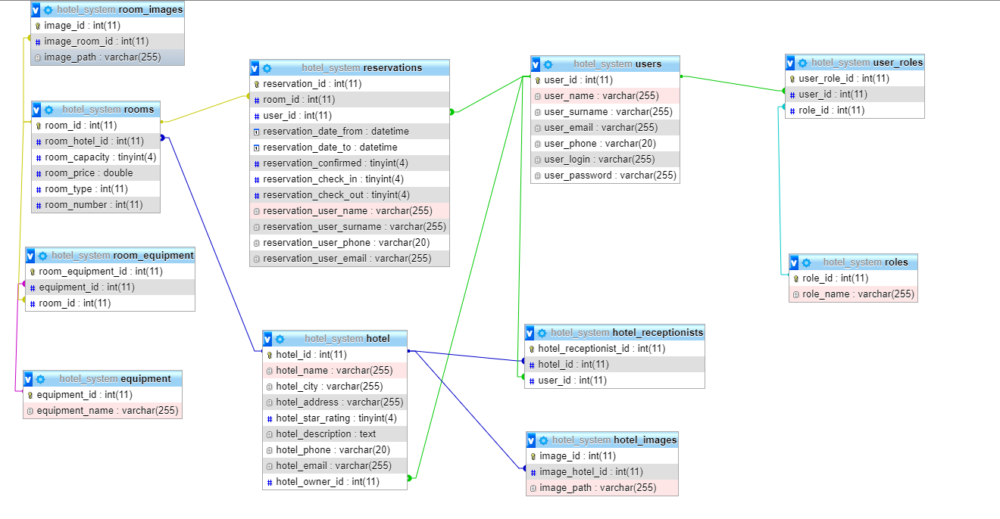

Hotel: rezervace a správa ubytování
- Autoøi
- Matìj Hlávka
xhlavk08@stud.fit.vutbr.cz -
Návrh databáze, backend, refaktorizace, code review
- Pavel Sklenáø
xsklen12@stud.fit.vutbr.cz -
Návrh databáze, frontend, testování
- Tomá¹ Køenek
xkrene15@stud.fit.vutbr.cz -
Návrh databáze, frontend, dokumentace
- URL aplikace
- http://www.xhlavk08.8u.cz
U¾ivatelé systému pro testování
Uveïte prosím existující zástupce v¹ech rolí u¾ivatelù.
| Login | Heslo | Role |
|---|
| admin | admin | Administrátor |
| owner | owner | Vlastník |
| receptionist | receptionist | Recepèní |
| customer | customer | Zákazník |
Implementace
Seznam presenterù a popis jejich úèelu:
- app/Presenters/BasePresenter: abstraktní presenter, slou¾í pro inject v¹ech repository objektù a vytvoøení pøihla¹ovacího a odhla¹ovacího formuláøe
- app/Presenters/HomepagePresenter: domovská stránka
- app/Presenters/HotelPresenter: pøehled hotelù, editace a pøidávání hotelù, zobrazení informací o jednotlivých hotelech
- app/Presenters/ReservationPresenter: pøehled, správa a editace rezervací
- app/Presenters/RoomPresenter:
- app/Presenters/UserPresenter:
- app/Presenters/Error4xxPresenter: zpracování chyb s kódem 4xx
- app/Presenters/ErrorPresenter: zpracování chyb
Popis pomocných tøíd, traitù a komponent
- app/orm/entity/BaseEntity: abstraktní tøída obsahující základní metody a atributy pro v¹echny ostatní entity
- app/orm/entity/EntityImageTrait: trait obsahující metody pro práci s obrázky, pou¾ívají ho entity Hotel a Room
- app/orm/repository/BaseRepository: abstraktní tøída obsahující základní metody pro ostatní repository
- app/orm/repository/DataTableRepository: abstraktní tøída implementující základní chování oèekávané komponentou DataTable,
repository dìdící od této tøídy by mìly implementovat metodu pro aplikaci filtrù a vhodným zpùsobem upravit metodu pro získání dat pro komponentu DataTable
- app/Components/DataTable: komponenta, která se stará o vykreslování pøehledu hotelù a pokojù
Databáze

Instalace
Po¾adavky
- Webový server, napø. Apache + MySQL + PHP >= 7.2. Mo¾no nainstalovat zvlá¹» nebo nainstalovat XAMPP nebo tøeba WAMP.
- Composer pro instalaci PHP závislostí.
- Bower pro instalaci JS a CSS knihoven.
Postup instalace
- Rozbalit projekt na Vámi zvolené místo.
- V koøenovém adresáøi projektu zadat pøíkaz composer install a bower install pro nainstalování knihoven.
- Pøidat virtuálního hosta na Vá¹ server s cestou smìøující do www adresáøe projektu.
Inicializace a konfigurace databáze
- Pro vytvoøení databáze staèí spustit SQL skript nacházející se ve slo¾ce sql.
- Konfiguraci pøipojení k databázi je nutné provést v souboru app/config/local.neon zde je zapotøebí nastavit pøíslu¹né hodnoty pro pøístup k databázi.